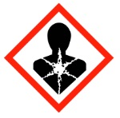

Designated SubstancesDesignated substances are materials that, due to risks associated with exposure, handling, or storage, are strictly regulated by the Ministry of Labour (MOL).
Research groups working with designated substances are legally bound to complete a safety assessment outlining compliance with applicable MOL regulations. See RMM 500: Designated Substances Control Program, and contact UHS for assistance.
The materials that have been rated as designated substances are:
- acrylonitrile
- arsenic
- asbestos
- benzene
- coke oven emissions
- ethylene oxide
- isocyanates
- lead
- mercury
- silica
- vinyl chloride
Of these designated substances, asbestos is a particularly notable concern for students and employees of McMaster University, as it was used in the construction of many aging campus facilities. This hazard is discussed in RMM 401: Asbestos Management Control Program, and as part of the mandatory SAFE Training course.